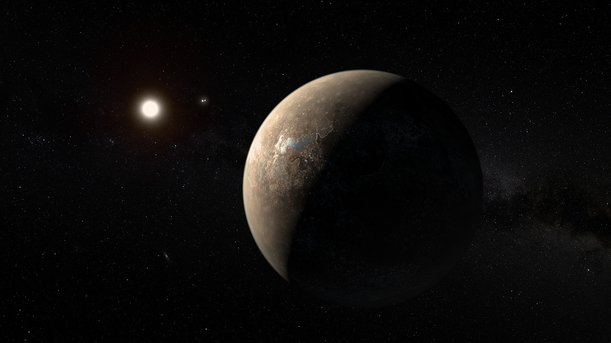

Future Directions: From Detections to Atmosphere Forecasts
TESS / SDSS-V / JWSTProposed Research
Which rocky planets around nearby M dwarfs retain atmospheres, and how does that depend on their host stars' activity, age, and chemistry? My next research direction is to move beyond finding candidate planets toward predictions that can be tested—and potentially falsified—with atmospheric observations. M dwarfs offer some of the most accessible rocky planets for JWST, but their long-lived magnetic activity can expose those planets to intense X-ray and ultraviolet (XUV) irradiation. Stellar luminosity alone may not capture the irradiation histories that determine atmospheric survival.
The radius valley distinguishes likely rocky and gas-rich planet populations statistically; it does not establish whether an individual rocky planet has an atmosphere today. The cosmic shoreline (Zahnle & Catling 2017) provides a complementary, empirical hypothesis: atmospheric survival depends on the competition between a planet's escape velocity and its historical, time-integrated XUV exposure. I use the Atmosphere Retention Metric (ARM) as a proposed measure of a planet's position relative to that boundary. The ARM is a predictor to be calibrated, not currently a measured probability of atmospheric retention.
Radius valley and cosmic shoreline. Left: M-dwarf planets and preliminary NEMESIS II signals in period–radius space. Right: escape velocity versus estimated historical XUV fluence, compared with the empirical shoreline and Solar System benchmarks. Colors illustrate the proposed ARM, not calibrated retention probabilities. Some planet masses are estimated rather than measured, and XUV histories remain uncertain. Figure from my November 2026 research proposal; click to enlarge.
First, characterize the planets and their stars. I will extend NEMESIS to longer multi-sector TESS light curves while measuring which signals the survey misses through injection–recovery and false-alarm controls. Rotation and flare measurements from TESS, K2, and ground-based data, combined with Gaia-based age constraints and SDSS-V chemical abundances, will inform ranges of plausible XUV histories. I will test differences between partially and fully convective M-dwarf hosts, whose magnetic evolution need not follow the same history.
Second, obtain masses where they have the greatest leverage. Planet masses and radii set escape velocities, but many potentially rocky M-dwarf planets lack useful mass constraints. I will prioritize precision radial-velocity observations (including facilities such as NEID and KPF), or transit-timing constraints where feasible, by asking which achievable mass measurement would most clearly separate competing atmospheric-retention predictions. This work will support an open catalog of planet masses, escape velocities, and a target-ranking tool.
Third, confront the forecasts with observations. Published JWST and other atmosphere-sensitive measurements will be treated as graded constraints—not simply as binary atmosphere detections—and compared with activity-informed shoreline predictions and the three-dimensional luminosity-based shoreline proposed by Berta-Thompson et al. (2026). If the available sample does not constrain both sides of the boundary, the scientifically meaningful result will be retention limits and prioritized follow-up targets, rather than an unsupported probability calibration. As the evidence grows, the framework can test whether atmospheric survival changes with stellar convective structure, age, or chemistry.
A Multi-Year Transit Search of Proxima Centauri
Ground-Based PhotometryPublished 2018 / 2019

Artist's impression of Proxima Centauri b. Credit: ESO.
Proxima Centauri, the nearest star to the Sun, hosts the radial-velocity-discovered planet Proxima Centauri b, with an orbital period of approximately 11.186 days. Finding transits would provide its radius and help determine its bulk composition, but Proxima is a magnetically active M dwarf whose flares, spot variability, and observational systematics can mimic or conceal transit-like signals. To investigate this, our collaboration assembled 329 epochs of ground-based photometry from 2006–2017, obtained with a worldwide network of small telescopes. Following quality cuts, 262 light curves formed the principal search sample.
Paper I — Blank et al. (2018), for which I served as corresponding author: We compared observations with published radial-velocity ephemerides and tentative transit claims. The 96 light curves overlapping those predictions did not independently corroborate the proposed transits, while demonstrating the star's persistent and complex photometric variability.
Paper II — Feliz et al. (2019): We carried out a blind Box Least Squares (BLS) search of the 262 high-quality light curves for periodic signals over approximately 1–30 days. False-alarm tests and 550 synthetic transit injections characterized what our data could detect. We found no convincing periodic transit signal. The observations strongly constrain a transit of the expected ~5 mmag depth at Proxima b's period in the tested configurations, and largely exclude transits deeper than ~3 mmag at periods shorter than five days. However, incomplete phase coverage and reduced sensitivity to shallower transits mean that all possible Proxima b transits cannot be ruled out.
This work helped establish a principle that now underpins my NEMESIS survey: a transit non-detection becomes scientifically informative only when its sensitivity is measured.
Selected figures from the Proxima Centauri studies
Figures from the published papers; click for a larger view.
Observations phased to proposed ephemerides (Blank et al. 2018, Fig. 3). A subset of 19 observing nights compared against the published candidate transit timings.
BLS power spectrum and significance thresholds (Feliz et al. 2019, Fig. 2). The strongest peaks, global false-alarm levels, and period-dependent thresholds used to evaluate candidate periodicities.Injection–recovery sensitivity (Feliz et al. 2019, Fig. 8). Synthetic transit recovery across period and depth under different false-alarm thresholds, quantifying which signals the data could or could not detect.
Future Directions: From Detections to Atmosphere Forecasts
TESS / SDSS-V / JWSTProposed Research
Which rocky planets around nearby M dwarfs retain atmospheres, and how does that depend on their host stars' activity, age, and chemistry? My next research direction is to move beyond finding candidate planets toward predictions that can be tested—and potentially falsified—with atmospheric observations. M dwarfs offer some of the most accessible rocky planets for JWST, but their long-lived magnetic activity can expose those planets to intense X-ray and ultraviolet (XUV) irradiation. Stellar luminosity alone may not capture the irradiation histories that determine atmospheric survival.
The radius valley distinguishes likely rocky and gas-rich planet populations statistically; it does not establish whether an individual rocky planet has an atmosphere today. The cosmic shoreline (Zahnle & Catling 2017) provides a complementary, empirical hypothesis: atmospheric survival depends on the competition between a planet's escape velocity and its historical, time-integrated XUV exposure. I use the Atmosphere Retention Metric (ARM) as a proposed measure of a planet's position relative to that boundary. The ARM is a predictor to be calibrated, not currently a measured probability of atmospheric retention.
Radius valley and cosmic shoreline. Left: M-dwarf planets and preliminary NEMESIS II signals in period–radius space. Right: escape velocity versus estimated historical XUV fluence, compared with the empirical shoreline and Solar System benchmarks. Colors illustrate the proposed ARM, not calibrated retention probabilities. Some planet masses are estimated rather than measured, and XUV histories remain uncertain. Figure from my November 2026 research proposal; click to enlarge.
First, characterize the planets and their stars. I will extend NEMESIS to longer multi-sector TESS light curves while measuring which signals the survey misses through injection–recovery and false-alarm controls. Rotation and flare measurements from TESS, K2, and ground-based data, combined with Gaia-based age constraints and SDSS-V chemical abundances, will inform ranges of plausible XUV histories. I will test differences between partially and fully convective M-dwarf hosts, whose magnetic evolution need not follow the same history.
Second, obtain masses where they have the greatest leverage. Planet masses and radii set escape velocities, but many potentially rocky M-dwarf planets lack useful mass constraints. I will prioritize precision radial-velocity observations (including facilities such as NEID and KPF), or transit-timing constraints where feasible, by asking which achievable mass measurement would most clearly separate competing atmospheric-retention predictions. This work will support an open catalog of planet masses, escape velocities, and a target-ranking tool.
Third, confront the forecasts with observations. Published JWST and other atmosphere-sensitive measurements will be treated as graded constraints—not simply as binary atmosphere detections—and compared with activity-informed shoreline predictions and the three-dimensional luminosity-based shoreline proposed by Berta-Thompson et al. (2026). If the available sample does not constrain both sides of the boundary, the scientifically meaningful result will be retention limits and prioritized follow-up targets, rather than an unsupported probability calibration. As the evidence grows, the framework can test whether atmospheric survival changes with stellar convective structure, age, or chemistry.
A Multi-Year Transit Search of Proxima Centauri
Ground-Based PhotometryPublished 2018 / 2019
Proxima Centauri, the nearest star to the Sun, hosts the radial-velocity-discovered planet Proxima Centauri b, with an orbital period of approximately 11.186 days. Finding transits would provide its radius and help determine its bulk composition, but Proxima is a magnetically active M dwarf whose flares, spot variability, and observational systematics can mimic or conceal transit-like signals. To investigate this, our collaboration assembled 329 epochs of ground-based photometry from 2006–2017, obtained with a worldwide network of small telescopes. Following quality cuts, 262 light curves formed the principal search sample.
Paper I — Blank et al. (2018), for which I served as corresponding author: We compared observations with published radial-velocity ephemerides and tentative transit claims. The 96 light curves overlapping those predictions did not independently corroborate the proposed transits, while demonstrating the star's persistent and complex photometric variability.
Paper II — Feliz et al. (2019): We carried out a blind Box Least Squares (BLS) search of the 262 high-quality light curves for periodic signals over approximately 1–30 days. False-alarm tests and 550 synthetic transit injections characterized what our data could detect. We found no convincing periodic transit signal. The observations strongly constrain a transit of the expected ~5 mmag depth at Proxima b's period in the tested configurations, and largely exclude transits deeper than ~3 mmag at periods shorter than five days. However, incomplete phase coverage and reduced sensitivity to shallower transits mean that all possible Proxima b transits cannot be ruled out.
This work helped establish a principle that now underpins my NEMESIS survey: a transit non-detection becomes scientifically informative only when its sensitivity is measured.
Transit probability and phase coverage (Feliz et al. 2019, Fig. 1). Longer-period transits become progressively harder to intercept and recover.Injection–recovery sensitivity (Feliz et al. 2019, Fig. 8). Synthetic transit recovery across period and depth under different false-alarm thresholds.
Artist's impression of Proxima Centauri b. Credit: ESO.